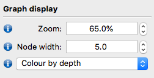

Assembly practical
Liz Batty
22 March, 2019
Learning objectives
- Learn how to perform de novo genome assembly from reads
- Understand the difference between contigs and scaffolds and complete assemblies
- Learn how to look at the quality of the genome assembly
- Understand the different measures used to assess genome assemblies
Exercise 1
In this practical we will perform de novo assembly of a genome from Illumina reads. You will be assembling a strain of Staphyloccocus aureus.
We will use SPAdes for this activity. SPAdes is one of a number of de novo assemblers that use short read sets as an input and the method for assembly is based on de Bruijn graphs. For information about SPAdes see this link and there is a manual.
In this activity, we will perform a de novo assembly of a short read set (from an Illumina sequencer) using the SPAdes assembler. The output from SPAdes that we are interested in is a multifasta file that contains the draft genome sequence.
Navigate to the directory for the assembly activity:
/home/ubuntu/data/day-2/assembly-practical
You will see a pair of FASTQ files for a S. aureus strain.
Question 1: Look at the fastq files. How long are the sequencing reads?
Now we will run spades to assemble the genome:
We will run spades with the --careful setting which aims to minimise the number of errors.
Question 2: How many cores is this assembly using? How would you change this?
Spades will take around 6 or 7 minutes to run. When spades has finished, look at the output files which are produced.
Question 3: Can you tell which k-mers Spades used for the assembly?
Look insides spades.log: this is the log file with all the information about how spades ran.
Now look at the assembled contigs file, contigs.fasta. This is a fasta file containing multiple fasta entries, one for each assembled contig. As we know, the first line of a fasta entry starts with “>”. The rest of the line tells us information about the contig - the name of the contig, the length of the assembled sequence, and the read coverage of the contig.
Spades produces a file with contigs and a file with scaffolds. If Spades thinks that two contigs should be joined together, but does not know what the sequence between them should be or how long it is, it will join the two contigs together with a string of “NNNNNNN” for unknown sequence.
Exercise 2
Now we will assess the quality of the contigs and scaffolds produced from Spades using a tool for assessing the quality of genome assemblies called Quast.
Run the following command:
Quast gives output both as text files, and as a report.html file which you can open in a web browser. Use FileZilla to move the quast report to your computer. This is the report.html file in the directory assembly/quast.
Double-click on report.html to open it in your browser. The report has an interactive table and a graph. Hover over each line in the table for an explanation.
Question 4: How many contigs (over 500bp) are there in the two assemblies? What is the n50 value for the two assemblies?
Which assembly do you think is better?
Exercise 3
We can also assess our assemblies by looking at the assembly graph. The assembly graph represents the assembly of the genome as a series of nodes and edges, showing regions which can be easily assembled and areas where there were multiple possibilities for assembly which have been resolved by the assembler. We will use a tool called Bandage for this. Bandage is a graphical tool so we will need to transfer the assembly graph files to the local computer and inspect them there.
Open the program Bandage. Go to File... menu > Load Graph and open the assembly_graph.fastg file which is already in the local directory. Once it is loaded push the “draw graph” button in the Graph Drawing menu.

Question 5: How many completely separate assembly graphs have been drawn? Why could you have multiple disconnected graphs?
To investigate this further, colour in your graph according to the depth of coverage of each node. To do this, change Random colours to Colour by depth in the menu under Graph Display. The nodes are coloured from red to black, with higher coverage in red.

Question 6: What do you notice about the colour of the short nodes and the long nodes in the chromosome graph? Why might this be?
Question 7: Look at the plasmid graph (the smaller graph at the bottom of the screen). What colour are the nodes in this graph? Why might this be?
Optional exercise 4
In the optional directory, there are read sets and an assembly for two other organisms: Klebsiella pneumoniae and Mycobacterium tuberculosis.
Run quast on the two assemblies. Remember to change the quast output directory so you do not overwrite the results from Exercise 2.
Here is an example command line: quast -o exercise4 optional/K_pneumoniae.fasta optional/M_tuberculosis.fasta
Question 8: How many contigs are in the assemblies? How does this compare to our S. aureus assembly?